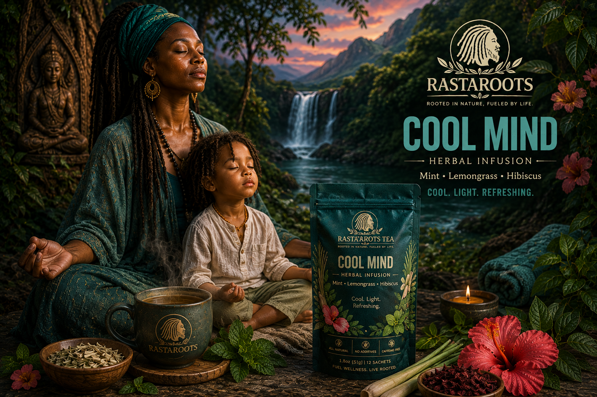

Choose
Select the RastaRoots blend that best matches the moment you want to create.
Official RastaRoots Playlist • Five Signature Rituals
Tea Ritual brings together herbal tradition, music and intentional time. Choose your blend, prepare your cup, press play and give yourself a moment to return to your Rootz.

Turn preparation into a meaningful pause.
Rooted rhythms for reflection and connection.
Choose the ritual that fits the moment.
Tea Ritual playlist access comes with every box.
Why Tea Ritual?
RastaRoots was built around the idea that wellness and heritage should feel lived, not performed. Tea Ritual creates one small space in the day where preparation, flavour, music and intention come together. There is no complicated routine — just a deliberate pause that helps you reconnect with the moment.
How It Works
Choose the blend. Prepare the tea. Play the music. Give the moment your attention.
Select the RastaRoots blend that best matches the moment you want to create.
Brew your sachet according to the preparation guidance supplied with the collection.
Step away from unnecessary noise and allow the herbs time to develop.
Scan the QR code or open the official Spotify playlist and bring music into the ritual.
Notice the flavour, temperature and aroma instead of treating the cup as something to rush through.
Use the moment for reflection, conversation, creativity, stillness or simply being present.
The Five Rituals
Each blend has its own flavour, character and Guardian. Explore the ritual that fits where you are right now.
Morning movement, warmth and intentional beginnings.

Plant knowledge, grounding and traditional herbal character.
Refreshing pauses, presence and growth from strong roots.
Endurance, discipline and the strength to continue.

Stillness, connection and a deliberate transition into rest.
The Guardian Says
The Guardian represents the knowledge behind the cup. RastaRoots rituals are not about making life complicated or pretending that one drink can solve everything.
They are about paying attention. Choose the blend that fits the moment, prepare it deliberately, press play and give your attention somewhere worth keeping.
“The ritual is not the tea alone. The ritual is the attention you bring to it.”
The Soundtrack
The official RastaRoots Tea Ritual playlist was created to give the cup an atmosphere — music for reflection, connection, creativity, conversation and slower moments.
Play it while you brew, journal, stretch, cook, work, talk with family or simply sit without needing to fill every second with noise.
Included In The Discovery Collection
The Founder Discovery Collection includes eight sachets of each signature blend, together with access to the official Tea Ritual playlist. Explore all five flavours, discover their ingredients and find the ritual that becomes part of your own routine.

More Than A Playlist
Tea Ritual is designed to make the Discovery Collection feel like more than a box of herbal tea. Music, storytelling, Guardians and herbal education give each blend a deeper place within the RastaRoots world.
As the brand grows, Tea Ritual can expand through founder content, community sessions, cultural storytelling, nature, music and shared experiences.
Explore The Community Vision →Don’t Lose Your Rootz
Founder Pre-Orders are open now. Secure the first Discovery Collection and begin exploring the five RastaRoots rituals.
Continue To Secure Checkout